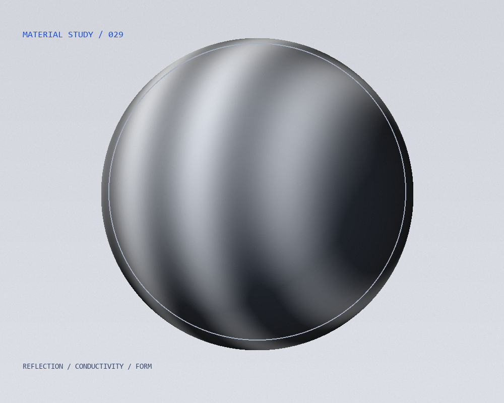

本文へ
MERCURY / LAB
Collection ↗

ELEMENTS ARE EVERYWHERE.
物質には、
名前がある。
Cu
X ━ Y ━ Z / REFLECTIVE STUDY
THE ELEMENT INDEX
分類
すべて
金属
非金属・半金属
12
ELEMENTS
01
H
水素
02
He
ヘリウム
06
C
炭素
07
N
窒素
08
O
酸素
10
Ne
ネオン
11
Na
ナトリウム
12
Mg
マグネシウム
13
Al
アルミニウム
14
Si
ケイ素
26
Fe
鉄
29
Cu
銅
銅 / 原子番号29を表示中